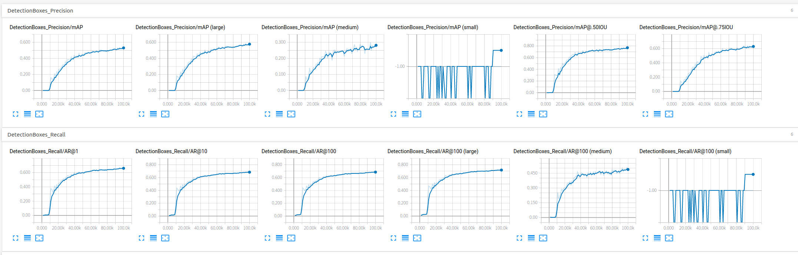
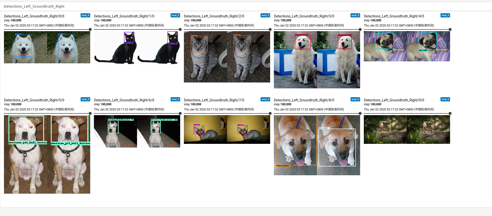

目标
使用猫狗数据集在本地电脑做迁移学习，获得能在手机上使用的SSD MobileNet模型
Github地址
这里需要下载research下面object_detection,slim两个项目，并保持在research下的目录结构
参考教程Training and serving a realtime mobile object detector in 30 minutes with Cloud TPUs
本文在教程的基础上做出一定的修改使其可以在本地运行，教程中的详细说明不再重复，仅列出需要注意的内容。
环境
Ubuntu 18.04.2 下使用docker镜像：
tensorflow/tensorflow 1.15.0-gpu-py3
nvidia/cuda 10.1-devel
过程
下载数据集
tfrecord文件下载地址
数据集包括7400张图片（37个猫狗种类各200张）
pet_label_map.pbtxt 文件是37个宠物分类（label文件）使用SSD MobileNet checkpoint文件作迁移学习
checkpoint文件下载地址-ssd_mobilenet_v1_0.75_depth_coco ☆
解压ssd_mobilenet_v1_0.75_depth_300x300_coco14_sync_2018_07_03.tar.gz
使用model.ckpt.* 3个文件配置config文件
config文件使用ssd_mobilenet_v1_pets.config
本文使用单块1070ti进行训练，batchsize最大只能设置16
在config文件末尾增加量化设置1
2
3
4
5
6
7graph_rewriter {
quantization {
delay: 1800
activation_bits: 8
weight_bits: 8
}
}文件结构
+research
+object_detection
+slim
+pycocotools
+<存放猫狗数据和模型的文件夹>
+data
-预训练模型ckpt
-label_map file
-train TFRecord file
-eval TFRecord file
+models
+ model
-pipeline config file
+train
+eval配置环境
1
2
3pip install Cython contextlib2 pillow lxml matplotlib -i https://pypi.tuna.tsinghua.edu.cn/simple/
./protoc/bin/protoc object_detection/protos/*.proto --python_out=.
export PYTHONPATH=$PYTHONPATH:`pwd`:`pwd`/slim安装COCO API
1
2
3
4git clone https://github.com/cocodataset/cocoapi.git
cd cocoapi/PythonAPI
make
cp -r pycocotools <path_to_workplace>/research/最后一步是将编译好的pycocotools文件夹放到/research目录下，与/object_detection和/slim平级
安装protoc 3.0
可以使用sudo apt-get install protobuf-compiler安装，如果编译有问题，则需要手动安装如下1
2wget -O protobuf.zip https://github.com/google/protobuf/releases/download/v3.0.0/protoc-3.0.0-linux-x86_64.zip
unzip protobuf.zip编译Protobufs
1
protoc object_detection/protos/*.proto --python_out=.
这里的protoc可以是apt安装的，或者是手动下载解压出来的protoc文件
注意，这里的编译路径务必严格按照上文列出的目录形式，这是在proto文件里写死的import地址，否则需要修改全部的proto文件
测试
1
python object_detection/builders/model_builder_test.py
启动：
1
2
3
4
5
6
7
8
9
10PIPELINE_CONFIG_PATH={path to pipeline config file}
MODEL_DIR={path to model directory}
NUM_TRAIN_STEPS=100000
SAMPLE_1_OF_N_EVAL_EXAMPLES=1
python object_detection/model_main.py \
--pipeline_config_path=${PIPELINE_CONFIG_PATH} \
--model_dir=${MODEL_DIR} \
--num_train_steps=${NUM_TRAIN_STEPS} \
--sample_1_of_n_eval_examples=$SAMPLE_1_OF_N_EVAL_EXAMPLES \
--alsologtostderrTensorboard查看训练过程

本次训练实际耗时16+小时，step10w，基本达到mAP@0.5IOU在测试集上78%的准确率；原始教程使用TPU只需要半小时即可达到该效果。
训练结果转化成tflite
graph文件转bp1
2
3
4
5
6
7
8
9export CONFIG_FILE={path to pipeline config file}
export CHECKPOINT_PATH={path to model directory}/model.ckpt-100000
export OUTPUT_DIR=/research/tflite
python object_detection/export_tflite_ssd_graph.py \
--pipeline_config_path=$CONFIG_FILE \
--trained_checkpoint_prefix=$CHECKPOINT_PATH \
--output_directory=$OUTPUT_DIR \
--add_postprocessing_op=truebp转tflite
1
2
3
4
5
6
7
8
9
10
11
12
13export OUTPUT_DIR=/research/tflite
toco \
--graph_def_file=$OUTPUT_DIR/tflite_graph.pb \
--output_file=$OUTPUT_DIR/detect.tflite \
--input_shapes=1,300,300,3 \
--input_arrays=normalized_input_image_tensor \
--output_arrays='TFLite_Detection_PostProcess','TFLite_Detection_PostProcess:1','TFLite_Detection_PostProcess:2','TFLite_Detection_PostProcess:3' \
--inference_type=QUANTIZED_UINT8 \
--mean_values=128 \
--std_dev_values=128 \
--change_concat_input_ranges=false \
--allow_custom_opstflite文件大小6.1M
在移动端实现
直接讲生成的detect.tflite替换掉tensorflow官方object_detection项目中的tflite，并同步修改label文件，无需其他调整即可使用。
效果如图
有文章有疑问可以发邮件到lacusrinz@gmail.com与我交流